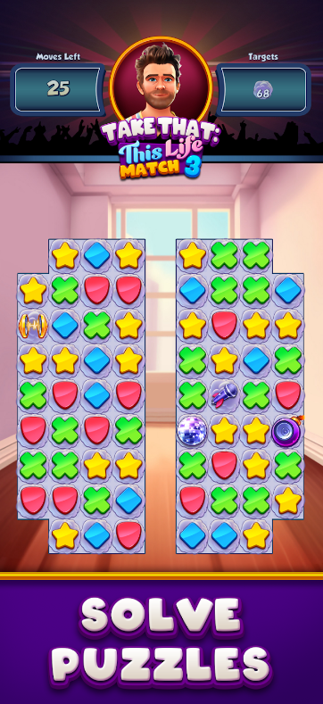
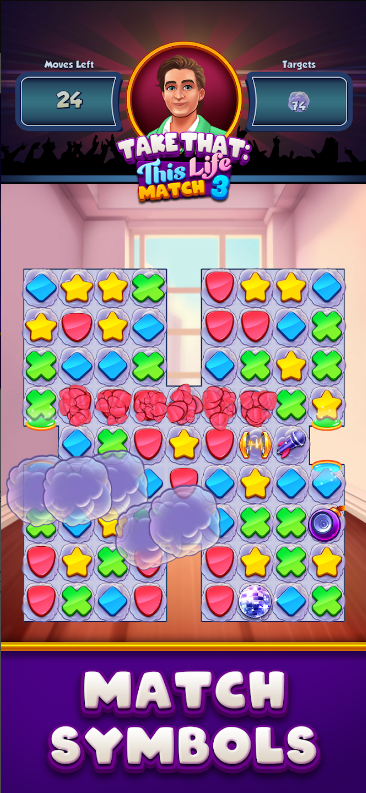
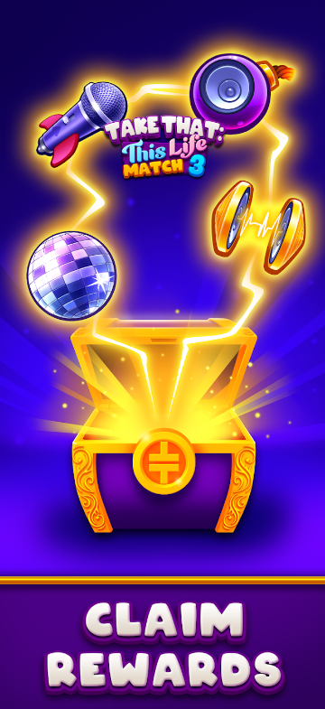
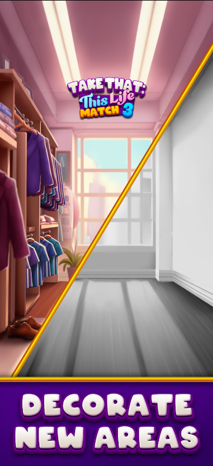
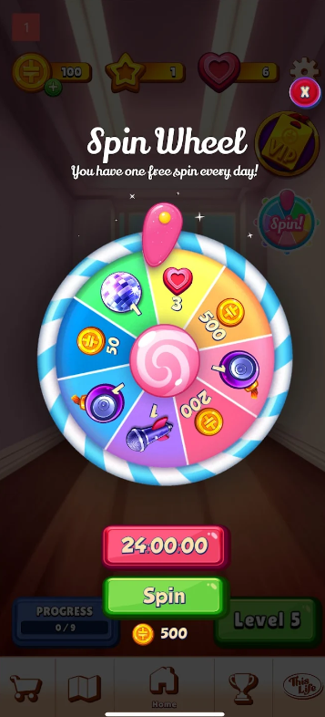
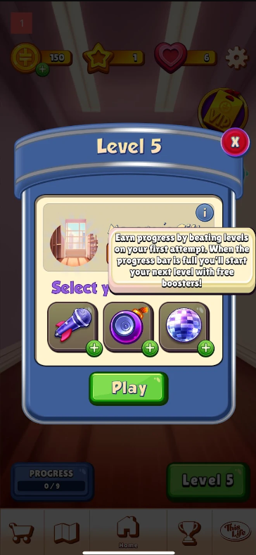

Take That: This Life
Overview
A mobile match-3 game developed alongside the release of Take That’s This Life. I worked across a wide range of the game’s systems, with particular responsibility for its cloud functionality and supporting metagame systems.
Cloud Services
Took ownership of the game’s Unity Cloud integration, including player authentication and account creation, cloud saves, economy, player data and LiveOps functionality. The integration made extensive use of asynchronous C# using Task and async/await when communicating with online services.
Save & Player Data
Developed systems for managing player progression and save data, including integration with cloud saves to persist player progress between sessions and devices.
Progression & Economy
Worked on progression, unlocks, rewards, currency, inventory, leaderboards, in-app purchases and the store.
LiveOps
Implemented cloud-backed functionality used for events, sales and other LiveOps content, allowing aspects of the game to be managed without requiring changes to the client.
UI
Developed and maintained UI functionality using a reusable UI framework shared with other CGA projects.





